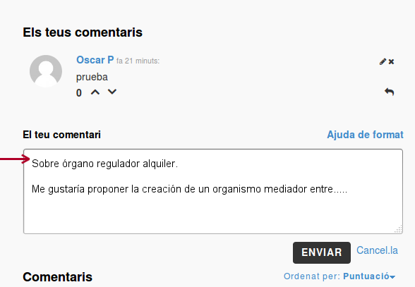

Hilos de conversación
- Cuando generes un comentario podrá ser respondido por parte de la comunidad.
- Un aspecto importante es que se pueden votar comentarios pero no las respuestas a los mismos.
- Os invitamos a poner un título a vuestro inicio de comentario con el aspecto que o propuesta que queréis elaborar.
